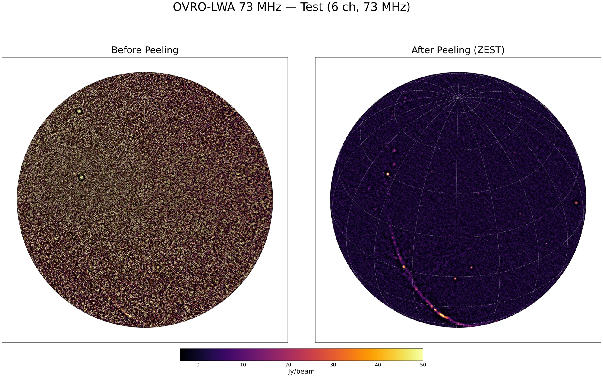
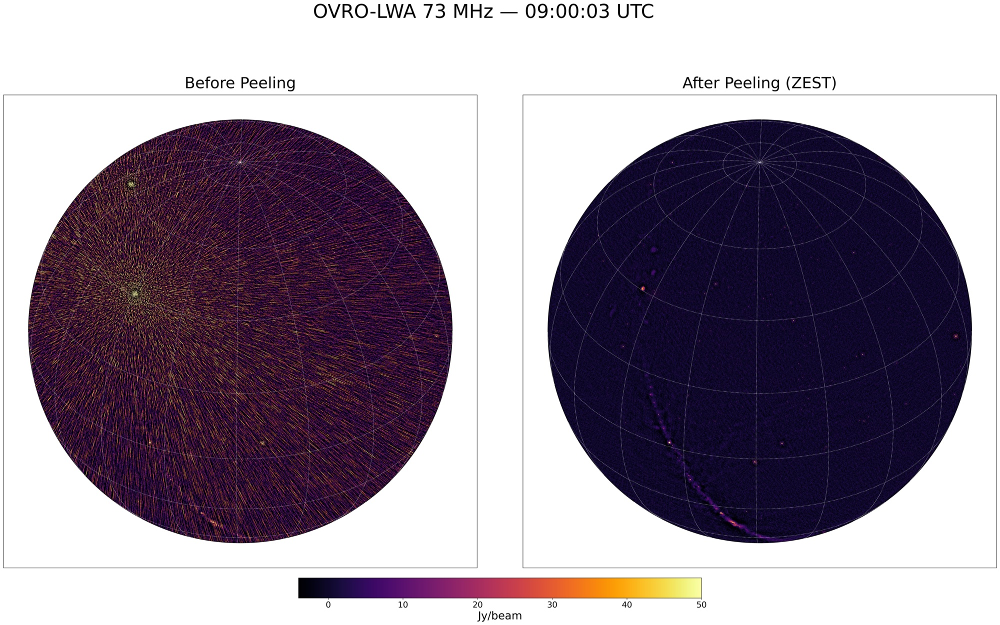
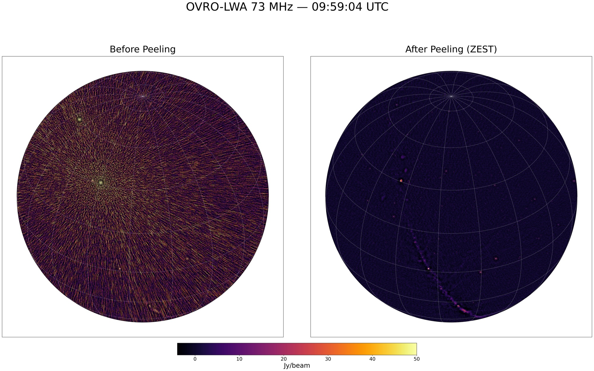

Tutorial
Peel the bright sources from OVRO-LWA snapshots with bin/zest_sky_rfi.jl, then image them. Paths in <angle brackets> are placeholders for your own data.
Environment (calim servers)
conda activate /opt/devel/pipeline/envs/py38_orca_nkosogor
export PATH="/opt/devel/nkosogor/nkosogor/julia-1.10.4/bin:$PATH"
export JULIA_DEPOT_PATH="/tmp/julia_${USER}:/opt/devel/nkosogor/nkosogor/julia_depot"
T=/opt/devel/nkosogor/nkosogor/TTCalX # or your clone of TTCalX (see Installation)
zest() { julia --project=$T $T/bin/zest_sky_rfi.jl "$@"; }The shared install is the version the production pipeline runs (tag gsi-v2); see Installation to run main (0.3) with the same environment.
1. Quick test (example MS)
examples/20240524_090003_73MHz_ch0to5.ms (6 channels at 73 MHz, ~22 MB, already calibrated, data in DATA). Always work on a copy.
mkdir -p <work dir> && cd <work dir>
cp -r $T/examples/20240524_090003_73MHz_ch0to5.ms test.ms
zest --column=DATA --rfi=$T/sources/rfi_43.2_ver20251101.json $T/sources/sources_7src_tauA.json test.msThese are the production settings: the defaults of zest_sky_rfi.jl (RK4 StefCal, maxiter=5, tolerance=1e-4, minuvw=5, peeliter=3, max-gain=100, exact model, geometric UVW, residual guard) plus the RFI emitters peeled after the sky (--rfi-mode=after). The sky model has Cyg A, Cas A, Tau A, Vir A, Her A, Hya A and Per B. --help lists the other options; see CLI Reference.
2. Full snapshots: calibrate, peel, image
cp -r <night-time averaged MS dir>/20240524_*_73MHz_averaged.ms .
python3 - <<'EOF'
import glob
from casatasks import applycal
for ms in sorted(glob.glob("20240524_*_73MHz_averaged.ms")):
applycal(vis=ms, gaintable=["<delay table>", "<bandpass table>"], calwt=[False], flagbackup=True)
EOFapplycal writes CORRECTED_DATA, the default column of both CLIs. Peel all MSes in one call, so that only the first one pays the ~1 min of Julia compilation:
zest --rfi=$T/sources/rfi_43.2_ver20251101.json $T/sources/sources_7src_tauA.json 20240524_*_73MHz_averaged.msOpt-in options for consecutive snapshots of one band: --precision=mixed --warm-start (single-precision normal equations; start from the previous snapshot's gains).
Alternative, bin/ttcal_gpu.jl (damped StefCal, kernel model, MS UVW; modes peel, zest, shave, prune; defaults maxiter=30, minuvw=10):
julia --project=$T $T/bin/ttcal_gpu.jl zest $T/sources/sources_7src_tauA.json 20240524_*_73MHz_averaged.msImage with the GPU imager
ttcalx-image snapshot makes the orca snapshot products (CLEAN I, dirty V, QA JSON) on one GPU. It reads the DATA column, so peel into DATA (--column=DATA, as the pipeline does) or copy the peeled column there first. Installation: GPU CLEAN imager.
ttcalx-image snapshot 20240524_*_73MHz_averaged.ms --out-dir images/
# -> images/<stem>-I-image.fits, <stem>-V-image.fits, <stem>-qa.jsonAlternative: WSClean through orca (dirty image)
from pathlib import Path
from orca.wrapper.wsclean import wsclean
out_dir = Path("images").resolve(); out_dir.mkdir(exist_ok=True)
for ms in sorted(Path(".").glob("20240524_*_73MHz_averaged.ms")):
wsclean(ms_list=[str(ms.resolve())], out_dir=str(out_dir),
filename_prefix=ms.stem.replace("_averaged", "_zested"),
extra_arg_list=["-pol", "IV", "-size", "4096", "4096", "-scale", "0.03125",
"-niter", "0", "-weight", "briggs", "0",
"-horizon-mask", "10deg", "-taper-inner-tukey", "30"],
num_threads=4, mem_gb=50)Timing (February 2026)
ttcal_gpu.jl zest, version of 2026-02-06, on an RTX A4000 (16 GB); 73 MHz, 352 antennas, 48 channels. For the 0.3.0 zest_sky_rfi.jl timings see the README.
| MS | time |
|---|---|
| first | ~27 s (includes compilation) |
| each further MS | ~5-10 s |
Example results (February 2026)
Dirty Stokes I images (niter=0) before and after ttcal_gpu.jl zest, same setup as the timing.
Quick test (6 channels):

Full MSes (48 channels), 09:00:03, 09:30:09 and 09:59:04 UTC:

